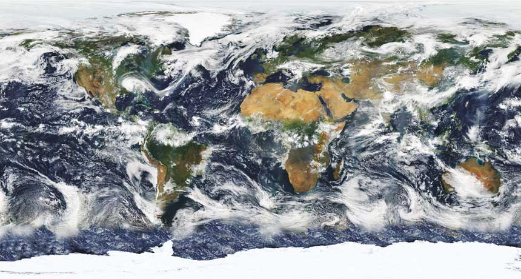
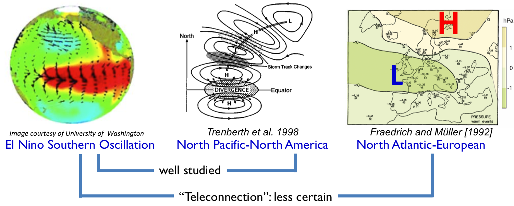

Ying LI 李颖

Clouds and large-scale climate dynamics
Clouds have a profound impact on the radiative budget of the Earth-atmosphere system. They cool the Earth by reflecting incoming shortwave radiation back to space but warm the it by trapping outgoing longwave radiation. Changes in cloud amount modify the radiative and latent heating of the atmosphere and thus also influence the large-scale atmospheric circulation. Clouds at different altitudes and with varying optical depths also affect the Earth’s radiation budget in different ways, and detailed information of the global three-dimensional structure of clouds is key for determining the vertical distribution of radiative heating rates Therefore, it is important to understand the linkages between the large-scale patterns of climate variability, cloud vertical structure and radiative forcing.
My current research examines the two-way linkages between cloud vertical structure and the large-scale extratropical circulations.
Using various CloudSat/CALIPSO observational products: We have provided the first observational evidence that variability associated with the planetary-scale stratospheric circulation (Li and Thompson 2013). We have systematically examine the large-scale dynamical and thermodynamical controls on the vertical structure of cloud incidence throughout the globe based on instantaneous cloud profiles (Li et al. 2014b). We have also explored the linkages between the northern annular mode/North Atlantic Oscillation (NAM/NAO) and clouds. We also diagnosed the CREs associated with NAM/NAO, and decomposed them using the radiative kernel methods. The results suggest that CREs may regulate the NAM/NAO by shortening its time-scale (Li et al. 2014a). We have also documented the vertical structure of clouds and CREs associated with large-scale annular variability in the Northern and Southern Hemispheres (Li and Thompson 2016).
Running numerical experiments with varying representations of cloud radiative effects (COOKIE-type simulations or cloud-locking simulations), we have studied the role of clouds on the atmospheric circulation in the context of long-term mean circulation (Li et al. 2015, Li et al. 2017), circulation response to global warming (Li et al. 2019), and the variability of the large-scale atmospheric circulation (Li et al. submitted).
ENSO teleconnections
The term "teleconnection" suggests that circulation anomalies and the associated temperature and precipitation anomalies in one location are related to those in remote regions. Seasonal predictions based on such relationships are of great utility and economic value. The best known examples are the global teleconnections related to the strong sea surface temperature (SST) variability associated with the El Nino-SouthernOscillation (ENSO) phenomenon in the tropical Pacific.
ENSO, as the dominant pattern of interannual climate variability, has strong influences on the atmospheric circulation around the globe. The atmospheric response over the North Pacific and America to ENSO is generally well accepted. However, the weaker response further downstream is much less understood. My thesis address the physical processes for the teleconnection between ENSO and climate over the North Atlantic sector. I identified possible pathways in both the troposphere (Li and Lau, 2012a, b) and stratosphere (Li and Lau, 2013) for this teleconnection. This work contributes to our understanding not only of the extratropical response to ENSO, but also of hemispheric teleconectivity in general.
The trpospheric pathway occurs because the high-frequency transient eddies embedded in the ENSO-modified midlatitude storm tracks, through their fluxes of momentum/vorticity, modulate background flow pattern. I developed an improved methodology better detecting and highlighting the downstream eddy development during the course of the persistent anomalous circulation episodes.
For the stratospheric pathway, I demonstrate the role of ENSO on the 1) strength and frequency of the stratospheric polar vortex through the modification of the upward propagating planetary waves and 2) descending of the perturbed stratospheric polar vortex back into the troposphere through the planetary wave refraction in the upper troposphere.